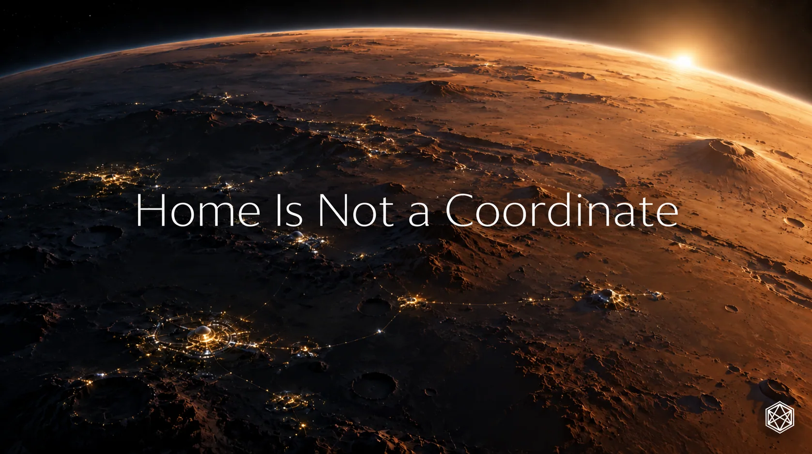

Home Is Not a Coordinate
A Geography Martians Can Own
Take one patch of Mars.
A few metres of ground among hundreds of millions of square kilometres. Rock, dust, slope, perhaps the remains of an impact so old that nothing living has ever seen it happen.
Before anybody lives there, the patch can already be located. An orbiter can photograph it. A terrain model can describe it. Coordinates can specify it with extraordinary precision.
Matlas can add another kind of reference. GRID can place it within the wider structure of Mars. BAR can distinguish those few metres from the ground beside them.
And still almost nothing has happened.
We know exactly where it is.
There is not yet much reason for anyone to care.
That difference — between somewhere that can be located and somewhere that matters — is where this book ends.
Somebody builds there
Perhaps the first thing to reach the patch is thoroughly unromantic.
A utility trench. A pressure corridor. A cable run. Then an airlock, because the engineering works better there than fifty metres further west.
For the first time, the location matters operationally.
Cargo is sent there. Maintenance teams are dispatched there. A rover stores the destination. People pass through the airlock at the beginning and end of shifts. The patch acquires function.
Settlement grows around it.
A workshop appears nearby. Someone puts a coffee counter into an unused corner because even on Mars there will eventually be a point at which engineering gives way to the need for caffeine. The counter becomes a café. Homes appear beyond it. A route between them acquires a surface, then lights, then whatever passes for ordinary street furniture in a pressurised Martian settlement.
A school opens within walking distance.
The map is changing much faster than the ground underneath it.
The technical identity can remain fixed while everything people actually encounter accumulates above it. That was always the purpose of making only a thin part of the geography stable.
An address does not make a civilisation.
It gives civilisation somewhere dependable to happen.
Then the location acquires a life
At first the airlock has an engineering identifier.
Later everybody calls it something shorter.
The route beside it receives a name. The neighbourhood acquires another. The café puts a sign over the door. A corner becomes associated with the technician who spent several years keeping an unreliable piece of equipment alive far beyond the point at which any sensible person would have replaced it.
Nobody formally decides that this collection of labels constitutes geography.
It simply becomes the way people talk about where they live.
Years pass.
The original airlock is retired. The workshop expands, then closes. The café changes hands, keeps its name and becomes old enough for people to describe it as an institution. The school is rebuilt because the settlement has more children than its founders expected.
Someone who once walked through the district every morning moves away.
Someone else arrives and considers the place entirely normal.
A couple meet there.
Their children later attend the school.
A serious accident occurs nearby. A memorial appears. Long after the details have faded from ordinary conversation, people still know why the memorial is there.
The original industrial quarter becomes residential. A route is renamed, although older residents continue using the previous name. One building disappears entirely and survives only in photographs and in the way the street bends around where it used to stand.
The BAR Cell has not changed.
Almost everything worth remembering has.
That is the useful asymmetry.
A stable reference provides continuity precisely because the human layer above it is allowed to accumulate, disappear, argue with itself and become untidy.
The Cell does not contain the story.
It gives the story a stable place to have happened.
A place is more than its location
This is where a technical description eventually runs out of useful vocabulary.
A coordinate can tell you where the café stands. It cannot explain why somebody who left thirty years ago still remembers the table near the window.
An address can identify the school. It cannot contain the experience of walking there every morning.
A map can show the memorial. It cannot tell you why one person stops beside it and another walks past without noticing.
The physical destination and the human place occupy the same ground, but they are not the same thing.
Most attachment to place is remarkably ordinary.
It comes from repetition.
The same route to work.
The same neighbour encountered at roughly the same time each morning.
Knowing which doorway sticks.
Knowing which shortcut actually saves time and which one only appears to on the map.
Recognising the particular sound a corridor makes when the ventilation changes.
Remembering where somebody used to live.
Knowing that the café will still serve you after the official closing time because the person behind the counter knows your name.
Nothing in those examples needs a heroic founding story.
That is the point.
Permanent civilisation does not become real when the first flag is planted or the first charter signed. It becomes real through thousands of unremarkable days in which the same places are used often enough to acquire expectation.
Eventually someone does not think of a settlement as the place where humanity established a foothold on Mars.
They think of it as where they are from.
That is a much bigger achievement.
The value of the thing that stays put
Earlier in the book, persistence looked like an engineering requirement.
A location should not drift because a scientific model improves. A boundary should not acquire two owners because software rounds differently. An old identifier should remain interpretable.
Those requirements still matter.
But they are not the deepest reason to preserve spatial continuity.
The deeper reason is that life changes.
The street can be renamed. The building can be replaced. The neighbourhood can expand beyond its original limits. A language can change. A generation can arrive that remembers none of the reasons behind the first set of names.
The ground remains available as common reference through all of it.
That continuity lets records accumulate instead of continually starting again. It lets photographs, incidents, construction plans, memories and histories keep referring to the same place even when the visible world around it has changed.
More importantly, it allows change without treating change as failure.
A neighbourhood does not have to remain within the boundaries its founders expected.
A useful local address does not have to resemble the planetary technical address underneath it.
A community does not have to preserve an early name merely because it appeared on the first map.
One stable layer buys freedom elsewhere.
That may be the larger operating principle hiding underneath Matlas.
Do not freeze everything.
Freeze only what benefits enough from persistence to justify the cost.
Then allow the rest to live.
And it has to become theirs
There is one final consequence of proposing a geography before the society that might use it exists.
Future Martians may dislike parts of it.
They may find GRID useful and Triplet irritating. They may preserve some layers, replace others or discover that distinctions that looked important from Earth barely matter in daily Martian life.
Eventually they may replace Matlas altogether.
They have to be allowed to.
A geography that future Martians are not free to change is not really a geography they own. It is somebody else’s decision with a very long expiry date.
This book can offer a starting architecture because early infrastructure often benefits from somebody thinking ahead. It cannot acquire permanent authority merely by being early.
If experience produces something better, experience should win.
That does not make the original work pointless. Good infrastructure is often replaced after doing useful work. Roads are rerouted. Buildings are rebuilt. Protocols give way to better protocols.
The objective is not immortality.
It is usefulness.
If Matlas helps a young Martian civilisation coordinate place while that civilisation develops its own richer geography, it has done something worthwhile. If later generations improve or replace it, the geography has genuinely become theirs.
From Mars to one front door
So return to the same patch of ground.
Two hundred years have passed.
It is no longer anonymous.
It sits inside a city whose founders would recognise very little.
The first pressure corridor is gone. A street now follows part of its route, bending slightly where an early structure once stood. The old industrial buildings have mostly disappeared. The café survives, though its current owners know the original proprietor only from a photograph hanging behind the counter.
The school is nearby.
The memorial remains two streets away.
The district has accumulated names, shortcuts and minor rivalries that make sense only to people who live there.
A person is travelling home.
Their vehicle knows the destination precisely. Somewhere underneath the interface, perhaps the original spatial identity still exists. Perhaps part of the system has been replaced by something better.
The person does not care.
They know the city.
As they get closer, the scales become smaller.
The city becomes a district.
The district becomes a street.
They pass the school. The café is still open. A familiar neighbour is walking in the opposite direction.
The street becomes a building.
The building becomes a front door.
There may still be an exact coordinate for that door. There may be a GRID lineage and a BAR identity underneath it. Databases, vehicles and emergency systems may depend on all of them.
None describes what happens next.
The person knows the door sticks slightly when the temperature drops. They know somebody inside has been promising to fix it for months. There are shoes where they should not be, something half-finished on the kitchen table and the familiar accumulation of objects that makes one small part of a planet unmistakably theirs.
The map has done all the work required of it.
It can stop.
The person opens the door.
That is the final transformation: not from inaccurate coordinates to accurate ones, and not from one spatial system to another, but from somewhere that can be found to somewhere that can be missed.
We arrive on Mars at coordinates.
We build addresses.
Eventually, we call them home.

Read a description of this illustration
The closing panoramic artwork depicts habitation emerging within a Martian landscape. It illustrates the idea that people form attachments to places, rather than supplying a geographic measurement or technical diagram.